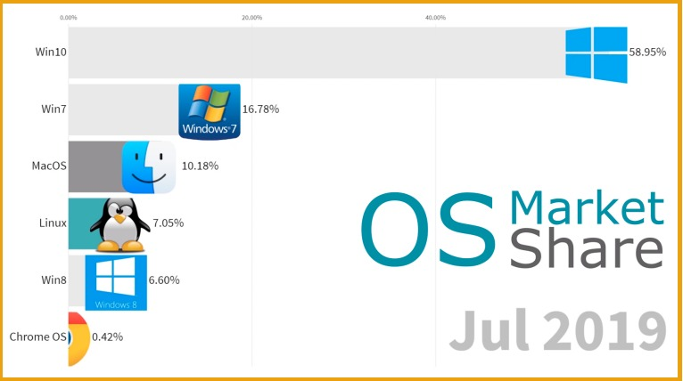
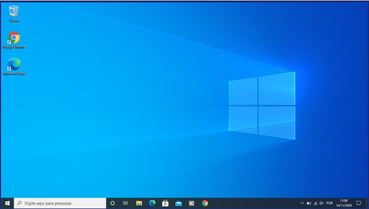
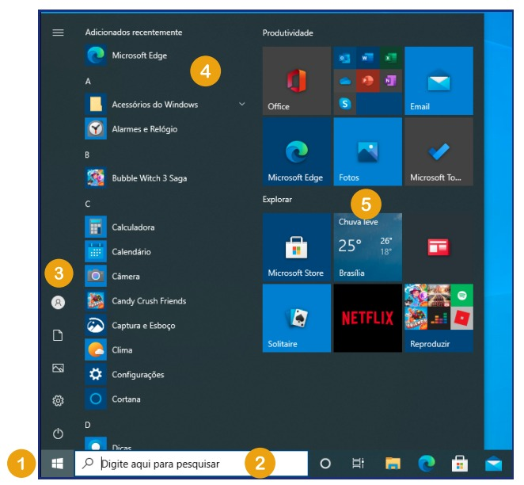
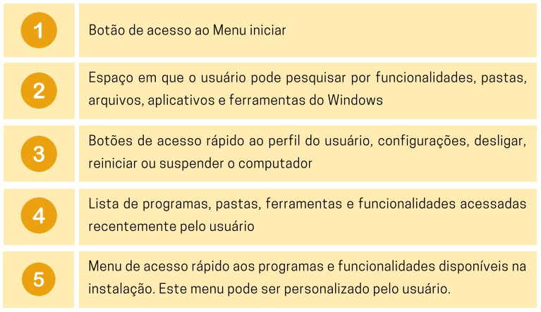
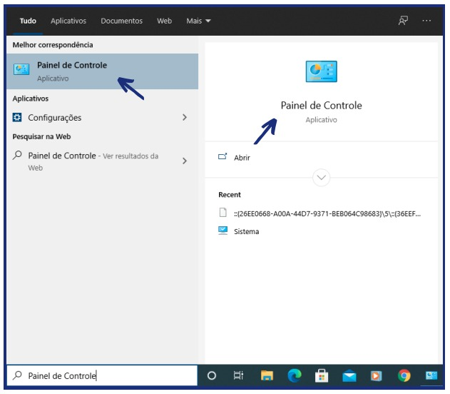
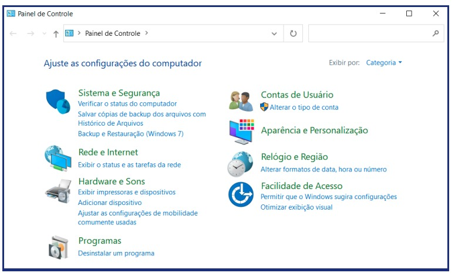
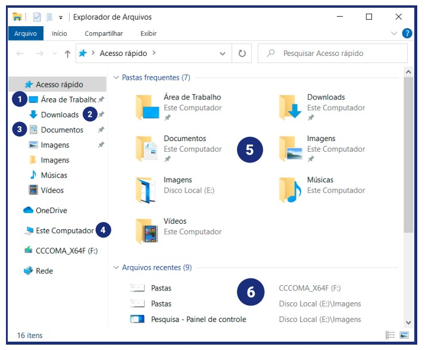
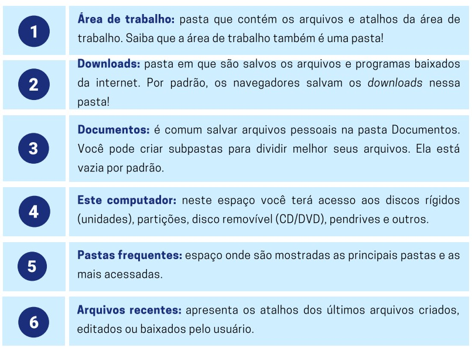

Conhecendo o Windows 10
De acordo com o site mundoconectado.com, o Windows 10 é o sistema operacional mais utilizado no mundo, isso porque, mesmo se tratando de um sistema operacional pago, ganhou adeptos no decorrer dos anos por ser mais amigável aos usuários e também por fornecer maior suporte. No gráfico abaixo é possível observar claramente a diferença de uso dos principais sistemas operacionais ativos atualmente:
Por ser o sistema operacional mais usado no momento, apresentaremos a seguir alguns espaços, ferramentas e funcionalidades importantes para que você utilize o Windows 10 sem complicações!
Área de Trabalho
Esta é a área de trabalho do Windows. É o espaço de trabalho da tela do usuário no qual aparecem os ícones como, “lixeira” e “meus documentos”, que são componentes da área de trabalho, além das janelas de aplicativos e as caixas de diálogo. Aqui ficam também os atalhos de programas para realizar inicializações rápidas e onde é possível salvar arquivos que você queira encontrar rapidamente.
Recomenda-se evitar o acúmulo de muitos atalhos e arquivos na área de trabalho, pois isso pode tornar mais difícil encontrar algo quando necessário. Para isso, o computador pode ser dividido em pastas, como explicaremos mais adiante. A imagem que aparece ao fundo é o “papel de parede” padrão do Windows 10 que pode ser alterada pelo usuário. Na parte inferior está a “barra de tarefas”. Nela é possível encontrar o relógio, os programas de inicialização rápida, que ficam do lado direito, e os ícones dos programas e pastas de acesso rápido, que ficam mais ou menos no meio da barra de tarefas.
Ainda na barra de tarefas, encontra-se também o botão “iniciar”, um dos mais utilizados pelos usuários. Possibilita localizar e abrir documentos, inicializar rapidamente um programa, alterar as configurações do computador ou desligar/reiniciar o computador.
* 
Painel de Controle
Outra área bastante utilizada pelos usuários do Windows é o “Painel de Controle”. É nesse espaço que você localiza praticamente toda e qualquer alteração que queira executar no seu computador. Para acessar o Painel de Controle, clique no botão iniciar e digite na caixa de pesquisa "Painel de Controle". O aplicativo aparecerá na busca conforme imagem a seguir:
Por meio do Painel de Controle é possível: alterar o sistema de segurança, realizar o controle de usuários, ativar e desativar opções de rede e internet, verificar opções de sons e hardwares, adicionar e remover programas, alterar aparência e personalização do Windows, alterar o horário do relógio e região, entre outras opções.
A imagem a seguir mostra o painel por completo.
As principais pastas no Windows 10
Em um sistema operacional, as pastas servem para armazenar/compartimentar arquivos ou programas. O Windows 10 disponibiliza pastas que são padrão em todas as instalações, portanto, é importante que você conheça melhor quais são elas e para que servem:
 Voltar